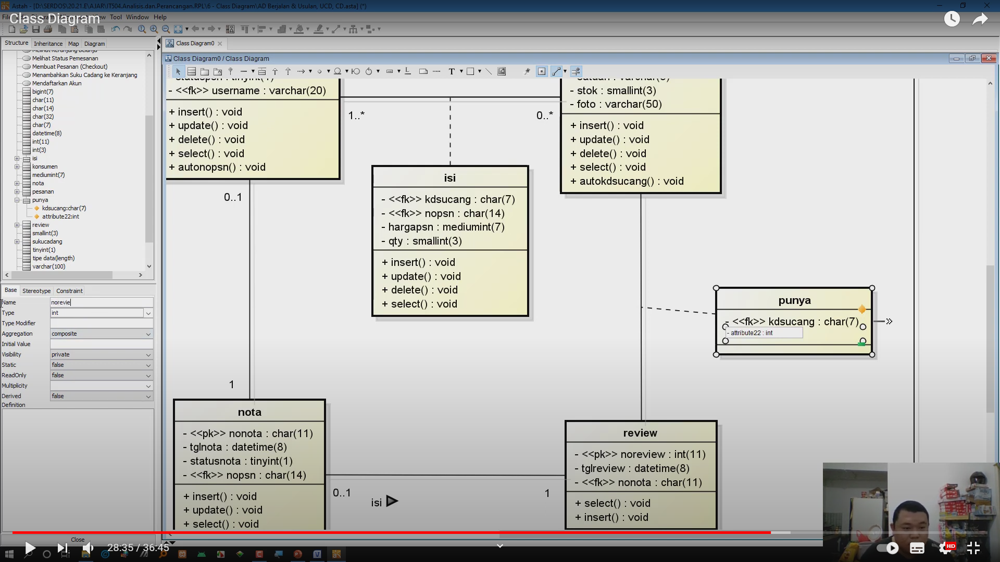

NIM : 1811500025
Nama : Jimmy Ngui
Kelompok : TI6A
Hasil Saya Menyadur :
1.Class Diagram = hubungan antar class/tabel.
2.Nama Class tidak boleh ada spasi.
3.Attribut terdapat field yang menjadi key, nama field, tipe data ,d an length data.
4.Method = proses/operasi yang dilakukan pada class.
5.Class Diagram adalah versi lengkap dari ERD dan LRS.
6.Stereotype = penentu PK
7.Multiplicity = menentukan tingkat
8.Isi/info atribut disesuaikan dengan DBMS
Miscellaneous :
